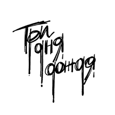

История создания группы
«Три дня дождя» — проект, зачастую отождествляемый с его основателем и солистом Глебом Викторовым. Подобно шведу Петеру Тэгтгрену, создавшему индастриал-метал-группу Pain, Викторов писал и исполнял всю музыку для «Трех дней дождя» и лишь иногда выпускал совместные фиты с другими исполнителями и приглашал их участвовать в концертах.
Глеб родился в 1996 году в столице Республики Тыва городе Кызыле. Отец музыканта — художник, а мать — домбристка.
Что было к моменту появления Глеба
К моменту появления Глеба на свет родители занимались бизнесом, но в гостях у творческой семьи постоянно бывали творческие люди, в том числе исполнители бардовской музыки.
Кем захотел стать?
Как и лидера панк-группы «Порнофильмы» Володю Котлярова, уроженца Кызыла в детстве впечатлило творчество коллектива Nirvana, мальчик захотел стать рок-музыкантом.
Состав группы
- Даниил Баслин
- Гитарист, участник группы "Три дня дождя"
- Григорий Смирницкий
- Бас-гитарист, участник группы "Три дня дождя"
- Николай Садков
- Ударные музыкальные инструменты, участник группы "Три дня дождя"
- Мария Гораш
- Барабаны, участник группы "Три дня дождя"